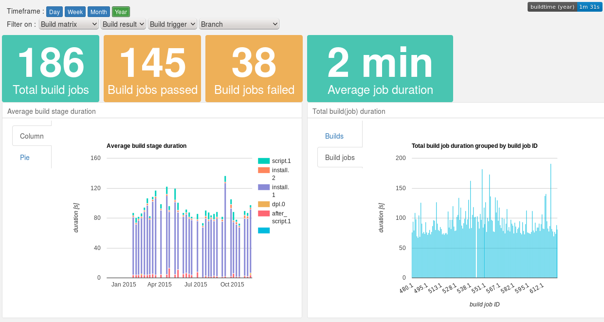
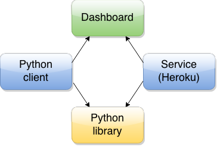

Buildtime Trend as a Service : free for Open Source projects. Check it out!
Buildtime Trend generates and gathers timing data of build processes. The aggregated data is used to create charts to visualise trends of the build process.
These trends can help you gain insight in your build process : which stages take most time? Which stages are stable or have a fluctuating duration? Is there a decrease or increase in average build duration over time?
With these insights you can further improve the stability of your build process and make it more efficient.
The generation of timing data is done with the Python client or using Buildtime Trend as a Service.
The Python based client generates custom timing tags for any shell based build process. It processes those tags when the build is finished, and stores the results.
Buildtime Trend as a Service gets timing and build related data by parsing the logfiles of a buildprocess. Currently, Travis CI is supported. Simply trigger the service at the end of a Travis CI build and the parsing, aggregating and storing of the data is done automatically.
Dashboard example
 Click the image for recently generated trends.
Features
- Get timing data from stages in a build process
- Store, analyse and create trends of the build process data
- using the service : it is triggered when the Travis CI build process is finished. The service retrieves build data and the logfile, which is parsed to extract the timing data. The processed timing data is stored in the Keen.io database.
- the client has two modes :
- keen mode : send timing data to Keen.io and use the Keen.io API for analysis and visualisation
- native mode : store data in xml format and use matplotlib to generate a chart (limited)
Current charts and trends
- number of builds, successful and failed
- average build duration
- chart with duration of individual build stages
- chart with builds per branch
- charts with build duration per time of day/day of week
How to use it?
Buildtime Trend consists of several subprojects :

- Buildtime Trend as a Service : Heroku application that offers Buildtime Trend as a Service. It hosts the dashboard that displays charts, generates status badges and has a service that can be triggered by Travis CI to download and parse Travis CI build logs. It relies on python-lib.
- Python client : Collection of scripts to generate timestamps as part of a build process. It relies on python-lib.
- Python library : Python library powering python-client and Buildtime Trend as a Service.
- Dashboard : Bootstrap powered HTML dashboard displaying trends and metrics generated from buildtime data using the Keen.io JavaScript SDK.
The dashboard is hosted on Buildtime Trend as a Service, is automatically deployed by the python-client, but can also be used stand alone.
Bugs and feature requests
Please report bugs and add feature requests in the Github issue tracker.
Credits
For an overview of who contributed to create Buildtime trend, see Credits.
Contact
Mailinglist : Buildtime Trend Community